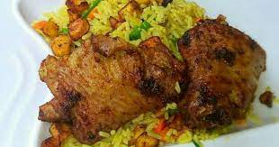

Fried Rice and Chicken Recipe

Ingredients:
- 2 cups of rice
- Chicken pieces
- Vegetable oil
- Onions
- Carrots
- Peas
- Soy sauce
- Salt and pepper to taste
Instructions:
- Wash the rice thoroughly and cook it according to package instructions.
- Cut the chicken into bite-sized pieces and season with salt and pepper.
- In a pan, heat vegetable oil and cook the chicken until browned and cooked through.
- Remove the cooked chicken from the pan and set it aside.
- In the same pan, add more oil if needed and sauté chopped onions until they become translucent.
- Add diced carrots and cook until they begin to soften.
- Stir in peas and cooked rice, and continue cooking for a few minutes.
- Return the cooked chicken to the pan and mix well.
- Season the fried rice and chicken with soy sauce, salt, and pepper to taste.
- Cook for an additional 5-7 minutes, stirring occasionally, until everything is well combined and heated through.
- Your delicious fried rice and chicken is now ready to be served!
Return to top
Return to main page